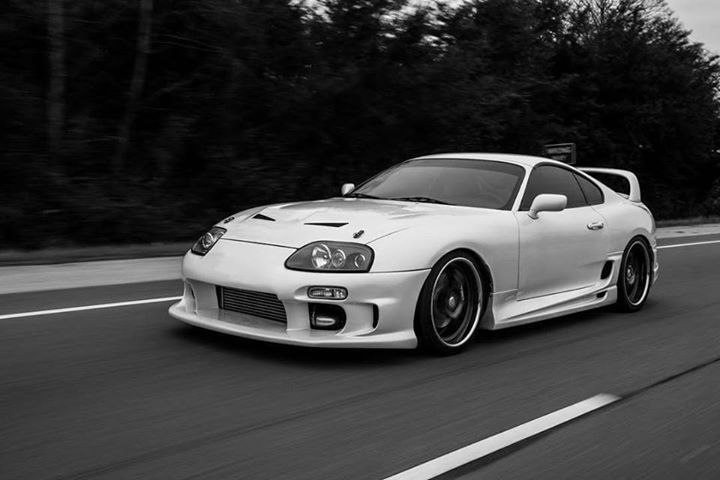
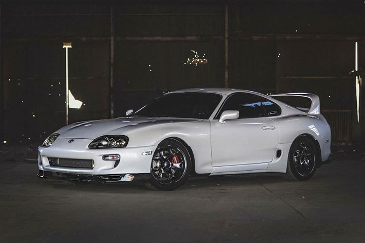
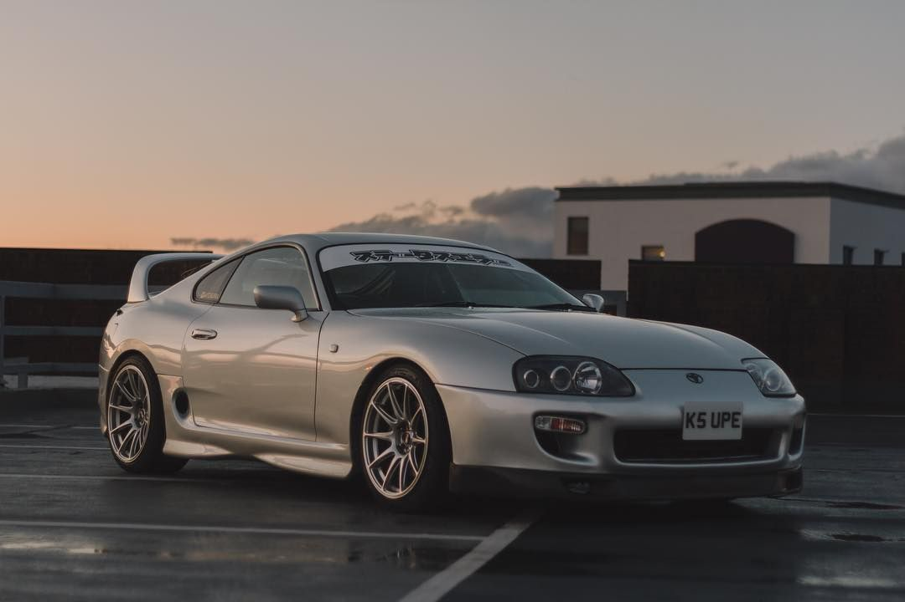
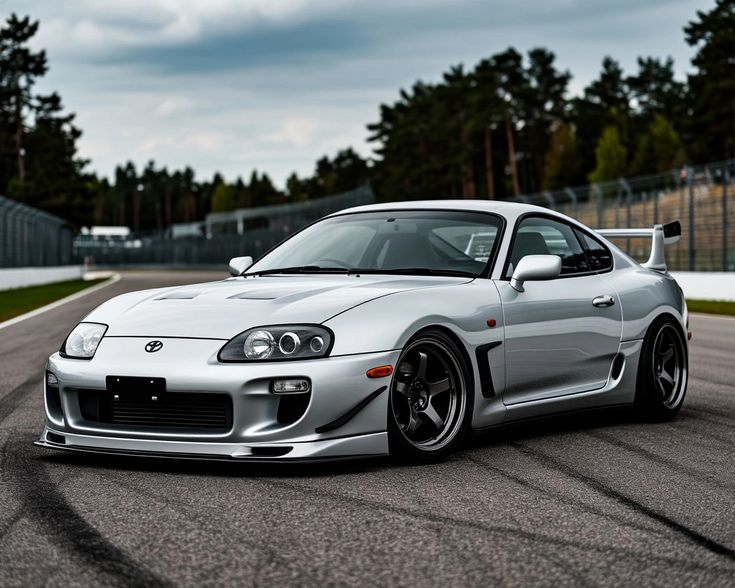

Explore the legacy and performance of the Toyota Supra
The Toyota Supra is one of the most iconic sports cars ever made. Its sleek design, powerful engine, and unmatched performance have made it a favorite among car enthusiasts worldwide.
The fifth-generation Supra, which debuted in 2019, combines the legacy of its predecessors with modern engineering, giving it an edge in the sports car market.
| Specification | Details |
|---|---|
| Engine | 3.0L Turbocharged Inline-6 |
| Horsepower | 382 hp |
| Torque | 368 lb-ft |
| Top Speed | 155 mph (electronically limited) |
| Transmission | 8-speed automatic |
| Fuel Efficiency | 26 MPG (combined) |




"The Toyota Supra is a masterpiece! It has the perfect combination of power, handling, and luxury. Driving it is a thrill like no other!"
"I've driven many sports cars, but the Supra stands out for its sheer performance and design. It's the best car I've ever owned!"
Use the map below to find a dealership near you where you can test drive the Toyota Supra